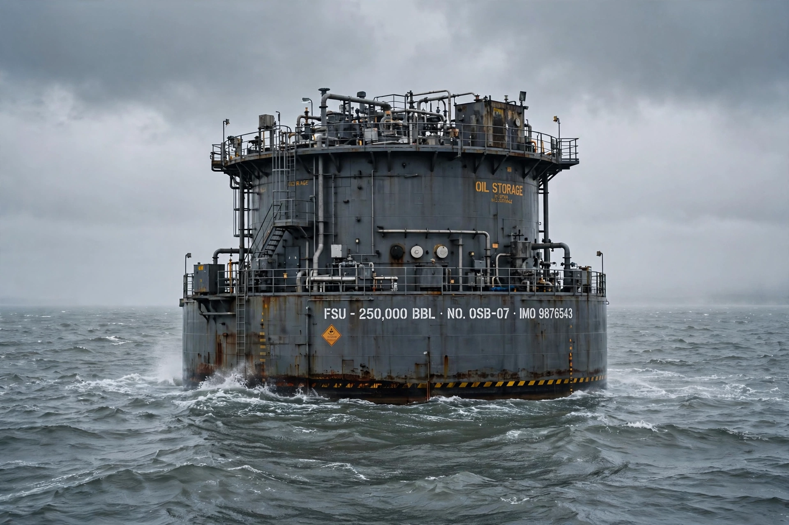

| Type | Oil storage and tanker loading buoy |
|---|---|
| Operator | Shell UK (for Shell/Esso) |
| Location | Brent field, East Shetland Basin, North Sea |
| In service | 1976–1991 |
| Fate | Dismantled; hull reused as quay foundations in Norway |
Brent Spar, or Brent E, was an oil storage and tanker loading buoy in the Brent oilfield in the North Sea, operated by Shell UK. In 1995 it became the focus of a major confrontation between Shell and Greenpeace over Shell's plan, approved by the UK government, to dispose of the decommissioned installation by sinking it in the deep Atlantic — a dispute that became a landmark in environmental campaigning and corporate public relations.
After the Brent field's pipeline to Sullom Voe opened, the Spar was taken out of service in 1991. Shell concluded, following a "best practicable environmental option" study, that deep-water sinking was preferable to onshore dismantling. On 30 April 1995 Greenpeace activists occupied the Spar, broadcasting live by satellite; Shell evicted them with water cannon in images shown worldwide, then briefly lost and regained the structure. A consumer boycott of Shell stations, especially in Germany, cut sales sharply, and Chancellor Helmut Kohl raised the issue with Prime Minister John Major. On 20 June 1995 Shell reversed its decision.
Greenpeace later apologised to Shell after accepting that its estimate of 5,500 tonnes of oil remaining aboard the Spar was too high; the actual amount was closer to 50–100 tonnes. The Spar was eventually dismantled in Norway, with its hull used in building a quay at Mekjarvik near Stavanger. The affair led to the 1998 OSPAR decision effectively banning the dumping of steel offshore installations in the North-East Atlantic.